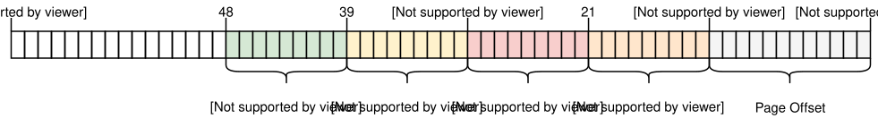

Реализация пагинации
Переведенное содержание: Это перевод сообщества поста Paging Implementation. Он может быть неполным, устаревшим или содержать ошибки. Пожалуйста, сообщайте о любых проблемах!
Перевод сделан @TakiMoysha.
В этом посте мы покажем как реализовать поддержу пагинации в нашем ядре. Сначала мы рассмотрим различные техники для обеспечения доступа ядра к ячейкам физических таблиц и обсудим их преимущества и недостатки. Затем реализуем функцию преобразования адресов и функцию создания нового отображения.
Этот блог открыто разрабатывается на GitHub. Если у вас есть какие-либо проблемы или вопросы, пожалуйста, создайте issue. Вы также можете оставлять комментарии внизу страницы. Полный исходный код для этого поста можно найти в ветке post-09.
Содержание
🔗Введение
В предыдущем посте было представлено понятие пагинации. Там мы сравнили её с сегментацией, объяснили, как работают страничная организация и таблицы страниц (page tables), а затем рассмотрели дизайн четырехуровневой таблицы страниц для x86_64. Мы выяснили, что загрузчик уже настроил иерархию таблиц страниц для нашего ядра, это значит, что наше ядро уже работает в виртуальных адресах. Это повышает безопасность, поскольку незаконный доступ к памяти вызывает ошибку страниц (page fault), вместо того чтобы изменять произвольную физическую память.
В посте было указано, что мы не можем получить доступ к таблицам страниц из нашего ядра, поскольку они хранятся в физической памяти, а наше ядро уже работает в виртуальных адресах. В этой статье мы рассмотрим различные подходы для обеспечения доступа к фреймам таблиц страниц из нашего ядра. Мы обсудим преимущества и недостатки каждого подхода, а затем выберем наиболее подходящий для нашего ядра.
Для реализации выбранного подхода нам потребуется поддержка загрузчика, поэтому мы сначала настроим его. После этого мы реализуем функцию, которая будет обходить иерархию таблицы страниц для преобразования виртуальных в физические адреса. Наконец, мы изучим, как создавать новые отображения в таблицах страниц и как находить незадействованные фреймы памяти для создания новых таблиц страниц.
🔗Доступ к Таблицам Страниц
Получить доступ к таблицам страниц из нашего ядра не так просто, как может показаться. Чтобы понять проблему, давайте еще раз рассмотрим пример иерархии 4-уровневой таблицы страниц из предыдущего поста:

Важно то, что каждая запись страницы хранит физический адрес следующей таблицы. Это избавляет от необходимости выполнять трансляцию и для этих адресов, что было бы плохо для производительности и могло легко вызвать бесконечные циклы трансляции.
Наша проблема в том, что мы не можем напрямую обращаться к физическим адресам из нашего ядра, поскольку само ядро работает поверх виртуальных адресов. Например, когда мы обращаемся к адресу 4 КБ, мы обращаемся к виртуальному адресу 4 КБ, а не к физическому адресу 4 КБ, где хранится таблица страниц 4-го уровня. Когда нам нужен доступ к физическому адресу 4 КБ, мы можем сделать это только через какой-либо виртуальный адрес, который на него отображается.
Таким образом, чтобы получить доступ к фреймам таблице страниц, нам нужно отобразить на них некоторые виртуальные страницы. Существует разные способы создания этих отображений, и все они позволяют нам обращаться к произвольным фреймам таблицы страниц.
🔗Идентичное Отображение
Простое решение - идентично отобразить все таблицы страниц:

В этом примере мы видим различные фреймы таблицы страниц с идентичным отображением. Таким образом, физические адреса таблицы страниц становятся одновременно и допустимыми виртуальными адресами, так нам легко получать доступ к таблицам всех уровней, начиная с регистра CR3.
Однако это засоряет адресное пространство и затрудняет поиск непрерывных областей памяти большого размера. Например, предположим, что мы хотим создать область виртуальной памяти размером 1000 КБ на графике выше, например, для memory-mapping файла. Мы не можем начать эту область с адреса 28 КБ, потому что это вызовет коллизию с уже отображенной страницей по адресу 1004 КБ. Поэтому нам приходится искать дальше, пока мы не найдем достаточно большую незанятую область, например, по адресу 1008 КБ. Это похожая проблема фрагментации, как и при сегментации.
Кроме того, это сильно усложняет создание новых таблиц страниц, поскольку нам нужно находить физические фреймы, чьи соответствующие страницы еще не заняты. Например, предположим, что мы зарезервировали виртуальную область памяти размером 1000 КБ, начиная с 1008 КБ, для нашего файла с отображением в память. Теперь мы больше не можем использовать ни один фрейм с физическим адресом между 1000 КБ и 2008 КБ, потому что мы не можем обеспечить ему идентичное отображение.
🔗Отображение с Фиксированным Смещением
Чтобы избежать перегрузки виртуального адресного пространства, мы можем использовать отдельный участок памяти для отображения таблицы страниц. Таким образом, вместо идентичного отображения фреймов таблицы страниц мы отображаем их с фиксированным смещением в виртуальном адресном пространстве. Например, смещение может составлять 10 ТиБ:

Используя виртуальную память в диапазоне 10 ТиБ..(10 ТиБ + размер физической памяти) исключительно для отображения таблиц страниц, мы избегаем проблем коллизий, характерных для идентичного отображения. Резервирование столь обширного участка виртуального адресного пространства возможно только в том случае, если оно значительно превышает размер физической памяти. На x86_64 это не представляет проблемы, поскольку 48-битное адресное пространство имеет размер 256 ТиБ.
Этот подход по-прежнему имеет недостаток, заключающийся в том, что нам приходится создавать новое отображение при каждом создании новой таблицы страниц. Кроме того, он не позволяет обращаться к таблицам страниц других адресных пространств, что было бы полезно при создании нового процесса.
🔗Отображение Всей Физической Памяти
Мы можем решить эти проблемы, отобразив всю физическую память, а не только фреймы таблиц страниц:

Такой подход позволяет нашему ядру обращаться к произвольной физической памяти, включая ячейки таблиц адресации других пространств адресов. Выделенный диапазон виртуальной памяти сохраняет прежний размер — главное отличие в том, что неотображенные страницы не содержаться в нем.
Недостаток этого подхода заключается в необходимости дополнительных таблиц страниц для хранения отображений физической памяти. Эти таблицы должны где-то храниться, поэтому они занимают часть физической памяти, что может стать проблемой на устройствах с небольшим объемом памяти.
Однако на архитектуре x86_64 мы можем использовать huge-pages размером 2 МБ для отображения вместо стандартных страниц по 4 КБ. Таким образом, для отображения 32 ГБ физической памяти потребуется всего 132 КБ под таблицы страниц: достаточно одной таблицы третьего уровня и 32 таблиц второго уровня. Huge-pages также более эффективны в плане кэширования, так как используют меньше записей в буфер ассоциативной трансляции (TLB).
🔗Временное Отображение
Для устройств с очень малым объемом физической памяти мы могли бы отображать фреймы таблицы страниц только временно, когда нам нужно получить к ним доступ. Чтобы иметь возможность временно отобразить памяти, нам нужна только одна идентично отображенная таблица первого уровня:

Таблица первого уровня на рисунке контролирует первые 2 МБ виртуального вдресного пространства. Это потому, что она достижима, начиная с регистра CR3 и следуя 0-й записи в таблицах страниц уровня 4, 3 и 2. Запись с индексом 8 отображает виртуальную страницу по адресу 32 КБ на физический фрейм с адресом 32 КБ, тем самым идентично отображая саму таблицу первого уровня. Графика показывает это идентичное отображение горизонтальной стрелкой на 32 КБ.
Записывая в идентично отображенную таблицу первого уровня, наше ядро может создавать до 511 временных отображений (512 минус запись, необходимая для идентичного отображения). В приведенном выше примере ядро создало два временных отображения:
- Сопоставив 0-ю запись таблицы уровня 1 с фреймом по адресу
24 КБ, он создал временное сопоставление виртуальной страницы по адресу0 КБс физическим фреймом таблицы страниц уровня 2, обозначенное пунктирной стрелкой. - Сопоставив 9-ю запись таблицы уровня 1 с фреймом по адресу
4 КБ, он создал временное сопоставление виртуальной страницы по адресу36 КБс физическим фреймом таблицы страниц уровня 4, обозначенное пунктирной стрелкой.
Теперь ядро может получить доступ к таблице страниц уровня 2, записывая данные на страницу 0 КБ, и к таблице страниц уровня 4, записывая данные на страницу 36 КБ.
Процесс доступа к произвольному фрейму таблицы страниц с временными отображениями будет следующим:
- Поиск свободной записи в идентично отображенной таблице уровня 1.
- Отображение этой записи на физический фрейм таблицы страниц, к которой мы хотим получить доступ.
- Доступ к целевому фрейму через виртуальную страницу, которая отображается на запись.
- Установка записи обратно в неиспользуемое состояние, тем самым снова удаляя временное отображение.
Этот подход повторно использует те же 512 виртуальных страниц для создания отображений и, таким образом, требует всего 4 КБ физической памяти. Недостаток заключается в том, что это немного громоздко, тем более что новое отображение может потребовать модификаций на нескольких уровнях таблицы, что означает, что нам придется повторять описанный выше процесс несколько раз.
🔗Рекурсивные Таблицы Страниц
Еще один интересный подход, который вообще не требует дополнительных таблиц страниц, это рекурсивное отображение таблицы страниц. Идея в том, чтобы отобразить запись из таблицы страниц 4-го уровня на эту же таблицу. Таким образом, мы эффективно резервируем часть виртуального адресного пространства и отображаем все текущие и будущие фреймы таблицы страниц в это пространство.
Давайте рассмотрим пример, чтобы понять, как все это работает:

Единственное отличие от примера в начале этого поста — это дополнительная запись по индексу 511 в таблице 4-го уровня, которая отображается в физический фрейм 4 КБ, фрейм самой таблицы 4-го уровня.
Если позволить ЦП следовать этой записи при трансляции, он попадает не в таблицу 3-го уровня, а снова в ту же таблицу 4-го уровня. Это похоже на рекурсивную функцию, вызывающую саму себя, поэтому эту таблицу называют рекурсивной таблицей страниц. Важно то, что процессор предполагает, что каждая запись в таблице 4-го уровня указывает на таблицу 3-го уровня, поэтому теперь он рассматривает таблицу 4-го уровня как таблицу 3-го уровня. Это работает, потому что таблицы всех уровней имеют абсолютно одинаковую структуру в x86_64.
Следуя рекурсивной записи один или несколько раз, прежде чем мы начнем фактическую трансляцию, мы можем эффективно сократить количество уровней, которые проходит ЦП. Например, если мы следуем рекурсивной записи один раз, а затем переходим к таблице уровня 3, ЦП думает, что таблица уровня 3 является таблицей уровня 2. Далее, он рассматривает таблицу уровня 2 как таблицу уровня 1, а таблицу уровня 1 как отображенный фрейм. Это означает, что теперь мы можем читать и записывать таблицу страниц уровня 1, потому что ЦП думает, что это отображенный фрейм. График ниже иллюстрирует пять шагов трансляции:

Аналогично, мы можем дважды выполнить рекурсивный вход перед началом трансляции, чтобы уменьшить количество пройденных уровней до двух:

Давайте разберем это шаг за шагом: Сначала ЦП следует рекурсивной записи в таблице уровня 4 и думает, что достигает таблицы уровня 3. Затем он снова следует рекурсивной записи и думает, что достигает таблицы уровня 2. Но на самом деле он все еще находится в таблице уровня 4. Когда ЦП теперь следует другой записи, он попадает в таблицу уровня 3, но думает, что уже находится в таблице уровня 1. Таким образом, хотя следующая запись указывает на таблицу уровня 2, ЦП думает, что она указывает на отображенный фрейм, что позволяет нам читать и записывать таблицу уровня 2.
Доступ к таблицам уровней 3 и 4 работает аналогично. Чтобы получить доступ к таблице уровня 3, мы трижды следуем рекурсивной записи, обманывая ЦП, заставляя думать, что он уже находится в таблице уровня 1. Затем мы следуем другой записи и достигаем таблицы уровня 3, которую ЦП рассматривает как отображенный фрейм. Для доступа к самой таблице уровня 4 мы просто четыре раза следуем рекурсивной записи, пока ЦП не будет рассматривать саму таблицу уровня 4 как отображенный фрейм (выделено синим цветом на графике ниже).

Может потребоваться некоторое время, чтобы осмыслить эту концепцию, но на практике она работает довольно хорошо.
В разделе ниже мы объясняем, как конструировать виртуальные адреса для однократного или многократного следования рекурсивной записи. Мы не будем использовать рекурсивную подкачку для нашей реализации, поэтому вам не нужно читать это, чтобы продолжить чтение поста. Если вам это интересно, просто нажмите “Расчет Адреса”, чтобы развернуть его.
Расчет Адреса
Мы выяснили, что можем получить доступ к таблицам всех уровней, последовательно проходя через рекурсивную запись один или несколько раз до фактической трансляции. Поскольку индексы в таблицы четырех уровней выводятся напрямую из виртуального адреса, нам необходимо сконструировать специальные виртуальные адреса для этой техники. Напомним, что индексы таблиц страниц выводятся из адреса следующим образом:

Предположим, что мы хотим получить доступ к таблице страниц первого уровня, которая отображает конкретную страницу. Как мы узнали выше, это означает, что нам нужно пройти через рекурсивную запись один раз, прежде чем продолжить с индексами 4, 3 и 2 уровней. Для этого мы сдвигаем каждый блок адреса на один блок вправо и устанавливаем исходный индекс уровня 4 как индекс рекурсивной записи:

Для доступа к таблице уровня 2 этой страницы мы сдвигаем каждый индексный блок на два блока вправо и устанавливаем как блоки исходного индекса уровня 4, так и исходного индекса уровня 3 равными индексу рекурсивной записи:

Доступ к таблице уровня 3 осуществляется через сдвиг каждого блока на три блока вправо и использования рекурсивного индекса для исходных адресных блоков уровня 4, уровня 3 и уровня 2:

Наконец, мы можем получить доступ к таблице 4-го уровня, сдвинув каждый блок на четыре блока вправо и используя рекурсивный индекс для всех блоков адресов, за исключением смещения:

Теперь мы можем вычислить виртуальные адреса для таблиц страниц всех четырёх уровней. Мы даже можем вычислить адрес, точно указывающий на конкретную запись в таблице страниц, умножив её индекс на 8 — размер записи в таблице страниц.
В приведенной ниже таблице представлена структура адресов для доступа к различным типам фреймов:
| Виртуальный Адрес для | Структура адреса (восьмеричная) |
|---|---|
| Страница | 0o_SSSSSS_AAA_BBB_CCC_DDD_EEEE |
| Запись в таблице 1-го уровня | 0o_SSSSSS_RRR_AAA_BBB_CCC_DDDD |
| Запись в таблице 2-го уровня | 0o_SSSSSS_RRR_RRR_AAA_BBB_CCCC |
| Запись в таблице 3-го уровня | 0o_SSSSSS_RRR_RRR_RRR_AAA_BBBB |
| Запись в таблице 4-го уровня | 0o_SSSSSS_RRR_RRR_RRR_RRR_AAAA |
При этом AAA это индекс 4-го уровня, BBB индекс 3-го, CCC индекс 2-го и DDD индекс 1-го уровня отображаемого фрейма, а EEEE смещение внутри него. RRR — это индекс рекурсивной записи. Когда индекс (три цифры) преобразуется в смещение (четыре цифры), это делается путем умножения на 8 (размер записи в таблице страниц). С этим смещением результирующий адрес напрямую указывает на соответствующую запись в таблице страниц.
SSSSSS — это биты расширения знака, то есть все они являются копиями 47-го бита. Это особое требование, предъявляемое к допустимым адресам в архитектуре x86_64. Мы объясняли это в предыдущем посте.
Используется восьмеричная запись чисел для адресов, поскольку каждый восьмеричный символ соответствует трем битам, что позволяет нам чётко разграничить 9-битные индексы различных уровней таблицы страниц. Это невозможно в шестнадцатеричной системе счисления, где каждый символ соответствует четырём битам.
🔗В Rust Коде
Для построения таких адресов в Rust можно использовать побитовые операции:
// виртуальный адрес, к таблицам страниц которого вы хотите получить доступ
let addr: usize = […];
let r = 0o777; // рекурсивный индекс
let sign = 0o177777 << 48; // расширение знака
// получить индексы таблицы адресов для адреса, который мы хотим преобразовать
let l4_idx = (addr >> 39) & 0o777; // индекс 4-го уровня
let l3_idx = (addr >> 30) & 0o777; // индекс 3-го уровня
let l2_idx = (addr >> 21) & 0o777; // индекс 2-го уровня
let l1_idx = (addr >> 12) & 0o777; // индекс 1-го уровня
let page_offset = addr & 0o7777;
// вычислить адреса ячеек таблицы
let level_4_table_addr =
sign | (r << 39) | (r << 30) | (r << 21) | (r << 12);
let level_3_table_addr =
sign | (r << 39) | (r << 30) | (r << 21) | (l4_idx << 12);
let level_2_table_addr =
sign | (r << 39) | (r << 30) | (l4_idx << 21) | (l3_idx << 12);
let level_1_table_addr =
sign | (r << 39) | (l4_idx << 30) | (l3_idx << 21) | (l2_idx << 12);В приведенном выше коде предполагается, что последняя запись 4-го уровня с индексом 0o777 (511) отображается рекурсивно. В настоящее время это не так, поэтому код пока не будет работать. Ниже описано, как настроить рекурсивное отображение в загрузчике.
В качестве альтернативы выполнению побитовых операций вручную можно использовать тип RecursivePageTable из крейта x86_64, который предоставляет безопасные абстракции для различных операций со таблицами страниц. Например, приведенный ниже код показывает, как преобразовать виртуальный адрес в его отображенный физический адрес:
// src/memory.rs
use x86_64::structures::paging::{Mapper, Page, PageTable, RecursivePageTable};
use x86_64::{VirtAddr, PhysAddr};
/// Создает экземпляр RecursivePageTable по адресу 4-го уровня.
let level_4_table_addr = […];
let level_4_table_ptr = level_4_table_addr as *mut PageTable;
let recursive_page_table = unsafe {
let level_4_table = &mut *level_4_table_ptr;
RecursivePageTable::new(level_4_table).unwrap();
}
/// Получить физический адрес для заданного виртуального адреса
let addr: u64 = […]
let addr = VirtAddr::new(addr);
let page: Page = Page::containing_address(addr);
// выполняет трансляцию
let frame = recursive_page_table.translate_page(page);
frame.map(|frame| frame.start_address() + u64::from(addr.page_offset()))И в этом случае для данного кода требуется корректное рекурсивное отображение. При наличии такого отображения отсутствующий параметр level_4_table_addr можно вычислить так же, как в первом примере кода.
Рекурсивная страничная организация памяти — это интересный прием, демонстрирующий, насколько эффективным может быть одно единственное сопоставление в таблице страниц. Его относительно просто реализовать, и для этого требуется лишь минимальная настройка (всего одна рекурсивная запись), поэтому это хороший вариант для первых экспериментов со страничной организацией памяти.
Тем не менее, у этого есть и отрицательные стороны:
- Он занимает большой объем виртуальной памяти (512 ГБ). В условиях обширного 48-разрядного это не представляет большой проблемы, но может привести к неэффективной работе кэша.
- Он позволяет легко обращаться только к текущему активному адресному пространству. Доступ к другим адресным пространствам по-прежнему возможен путем изменения рекурсивной записи, но для возврата обратно требуется временное отображение. Мы описали, как это сделать, в (устаревшем) посте Remap The Kernel.
- Он в значительной степени зависит от формата таблицы страниц x86 и может не работать на других архитектурах.
🔗Поддержка Загрузчика
Все эти подходы требуют изменения таблиц страниц для своей настройки. Например, необходимо создать отображения для физической памяти или рекурсивно отобразить запись таблицы 4-го уровня. Проблема заключается в том, что мы не можем создать эти необходимые отображения, не имея доступа к таблицам страниц.
Это означает, что нам нужна помощь загрузчика, который создает таблицы страниц, на которых работает наше ядро. Загрузчик имеет доступ к таблицам страниц, поэтому он может создавать любые необходимые нам отображения. В своей текущей реализации крейт bootloader поддерживает два из вышеперечисленных подходов, управляемых через cargo features:
- Функция
map_physical_memoryотображает всю физическую память в виртуальное адресное пространство. Таким образом, ядро получает доступ ко всей физической памяти и может использовать подход Отображение всей физической памяти. - С помощью функции
recursive_page_tableзагрузчик рекурсивно отображает запись таблицы страниц 4-го уровня. Это позволяет ядру получать доступ к таблицам страниц, как описано в разделе Рекурсивные таблицы страниц.
Мы выбрали первый подход для нашего ядра, поскольку он прост, не зависит от платформы и обладает большей функциональностью (кроме того, он обеспечивает доступ к областям памяти, не входящим в таблицу страниц). Чтобы обеспечить необходимую поддержку загрузчика, мы добавляем функцию map_physical_memory в нашу зависимость bootloader:
[dependencies]
bootloader = { version = "0.9", features = ["map_physical_memory"]}Если этот функционал включен, загрузчик сопоставляет всю физическую память какому-либо неиспользуемому диапазону виртуальных адресов. Чтобы сообщить ядру о диапазоне виртуальных адресов, загрузчик передаёт структуру с загрузочными данными.
🔗Загрузочные Данные
Крейт bootloader определяет структуру BootInfo, содержащую всю информацию, которую он передаёт нашему ядру. Эта структура пока находится на ранней стадии разработки, поэтому при обновлении до будущих версий загрузчика, несовместимых по semver, возможны сбои в работе. При включенной функции map_physical_memory она в настоящее время имеет два поля: memory_map и physical_memory_offset:
- Поле
memory_mapсодержит данные об доступной физической памяти. Оно сообщает ядру, какой объём физической памяти доступен в системе и какие области памяти зарезервированы для таких устройств, как аппаратное обеспечение VGA. Карту памяти можно запросить у микропрограммы BIOS или UEFI, но только на самом раннем этапе процесса загрузки. По этой причине её должен предоставлять загрузчик, поскольку у ядра нет возможности получить её позже. Карта памяти понадобится нам позже в этой статье. - Параметр
physical_memory_offsetуказывает начальный виртуальный адрес отображения физической памяти. При сложении этого смещения с физическим адресом мы получаем соответствующий виртуальный адрес. Это позволит обращаться из ядра к произвольным участкам физической памяти. - Это смещение физической памяти можно настроить, добавив в файл Cargo.toml
[package.metadata.bootloader]и задав полеphysical-memory-offset = «0x0000f00000000000»(или любое другое значение). Однако обратите внимание, что загрузчик может выдать ошибку, если столкнется со значениями физических адресов, которые начинают пересекаться с пространством за пределами смещения, т.е. с областями, которые он ранее сопоставлял с некоторыми другими ранними физическими адресами. Поэтому в целом, чем выше значение (> 1 ТБ), тем лучше.
Загрузчик передаёт структуру BootInfo нашему ядру в виде аргумента &'static BootInfo в нашу функцию _start. Этот аргумент ещё не объявлен в нашей функции, поэтому давайте его добавим:
// src/main.rs
use bootloader::BootInfo;
#[unsafe(no_mangle)]
pub extern "C" fn _start(boot_info: &'static BootInfo) -> ! { // новый аргумент
[…]
}Раньше отсутствие этого аргумента не представляло проблемы, т.к. в конвенции вызова x86_64 первый аргумент передается в регистре процессора. Таким образом, если аргумент не объявлен, он просто игнорируется. Однако это может стать проблемой, если мы случайно используем аргумент неверного типа, поскольку компилятор не знает правильной сигнатуры типа нашей функции-точки входа.
🔗Макрос entry_point
Поскольку наша функция _start вызывается извне, из загрузчика, проверка сигнатуры функции не производится. Это означает, что мы могли бы передавать ей произвольные аргументы без каких-либо ошибок компиляции, но при этом она могла бы завершиться сбоем или вызвать UB во время выполнения.
Чтобы гарантировать, что ф-ция реализующая entry-point имеет правильную сигнатуру, ожидаемую загрузчиком, крейт bootloader предоставляет макрос entry_point, который обеспечивает проверку типов при определении Rust функции в качестве точки входа. Давайте перепишем нашу функцию, чтобы использовать этот макрос:
// src/main.rs
use bootloader::{BootInfo, entry_point};
entry_point!(kernel_main);
fn kernel_main(boot_info: &'static BootInfo) -> ! {
[…]
}Нам больше не нужно использовать extern "C" или no_mangle для нашей точки входа, так как макрос сам определяет для нас реальную низкоуровневую точку входа _start. Функция kernel_main теперь является совершенно обычной функцией Rust, поэтому мы можем выбрать для нее любое имя. Важно то, что она проходит проверку типов, так что при использовании неверной сигнатуры функции, например, при добавлении аргумента или изменении типа аргумента, возникает ошибка компиляции.
Давайте внесем такое же изменение в наш файл lib.rs:
// in src/lib.rs
#[cfg(test)]
use bootloader::{entry_point, BootInfo};
#[cfg(test)]
entry_point!(test_kernel_main);
/// входная точка для `cargo test`
#[cfg(test)]
fn test_kernel_main(_boot_info: &'static BootInfo) -> ! {
// как раньше
init();
test_main();
hlt_loop();
}Поскольку точка входа используется только в тестовом режиме, мы добавляем атрибут #[cfg(test)] ко всем элементам. Мы присваиваем нашей тестовой точке входа уникальное имя test_kernel_main, чтобы избежать путаницы с kernel_main в нашем файле main.rs. Пока мы не используем параметр BootInfo, поэтому добавляем к имени параметра префикс _, чтобы отключить предупреждение о неиспользуемой переменной.
🔗Реализация
Теперь, когда у нас есть доступ к физической памяти, мы наконец-то можем приступить к реализации кода таблиц страниц. Сначала мы рассмотрим активные в данный момент таблицы страниц, на которых работает наше ядро. На втором этапе мы создадим функцию трансляции, которая возвращает физический адрес, на который сопоставляется заданный виртуальный адрес. В заключение мы попробуем изменить таблицы страниц, чтобы создать новое сопоставление.
Прежде чем начать, создадим новый модуль memory для нашего кода:
// src/lib.rs
pub mod memory;Для модуля создаем пустой файл src/memory.rs.
🔗Доступ к Таблицам Страниц
В конце предыдущего поста мы пытались изучить таблицы страниц, с которыми работает наше ядро, но не смогли этого сделать, поскольку не имели доступа к физическому фрейму, на который указывает регистр CR3. Теперь мы можем продолжить с того места, создав функцию active_level_4_table, которая возвращает ссылку на активную таблицу страниц 4-го уровня:
// src/memory.rs
use x86_64::{
structures::paging::PageTable,
VirtAddr,
};
/// Возвращает мутабельный указатель на активную таблицу 4 уровня.
///
/// Эта ф-ция unsafe, потому что вызывающий должен гарантировать, что
/// вся физическая память отображена в виртуальную память по переданному
/// `physical_memory_offset`. Так же, эту функцию следует вызывать единожды
/// чтобы избежать псевдонимов для ссылок `&mut` (что приводит к UB).
pub unsafe fn active_level_4_table(physical_memory_offset: VirtAddr)
-> &'static mut PageTable
{
use x86_64::registers::control::Cr3;
let (level_4_table_frame, _) = Cr3::read();
let phys = level_4_table_frame.start_address();
let virt = physical_memory_offset + phys.as_u64();
let page_table_ptr: *mut PageTable = virt.as_mut_ptr();
unsafe { &mut *page_table_ptr }
}Сначала мы считываем физический фрейм активной таблицы 4-го уровня из регистра CR3. Затем мы берем его физический начальный адрес, преобразуем его в u64 и прибавляем к physical_memory_offset, чтобы получить виртуальный адрес, на который отображается фрейм таблицы страниц. Наконец, мы преобразуем виртуальный адрес в сырой указатель *mut PageTable с помощью метода as_mut_ptr, а затем создаем из него ссылку &mut PageTable (как unsafe). Мы создаем ссылку &mut, а не &, потому что позже в этой статье мы будем изменять таблицы страниц.
Теперь мы можем использовать эту функцию для вывода элементов таблицы 4-го уровня:
// src/main.rs
fn kernel_main(boot_info: &'static BootInfo) -> ! {
use blog_os::memory::active_level_4_table;
use x86_64::VirtAddr;
println!("Hello World{}", "!");
blog_os::init();
let phys_mem_offset = VirtAddr::new(boot_info.physical_memory_offset);
let l4_table = unsafe { active_level_4_table(phys_mem_offset) };
for (i, entry) in l4_table.iter().enumerate() {
if !entry.is_unused() {
println!("L4 Entry {}: {:?}", i, entry);
}
}
// как раньше
#[cfg(test)]
test_main();
println!("It did not crash!");
blog_os::hlt_loop();
}Сначала мы преобразуем physical_memory_offset структуры BootInfo в VirtAddr и передаём его в функцию active_level_4_table. Затем мы используем функцию iter для перебора записей таблицы страниц и комбинатор enumerate, чтобы дополнительно добавить индекс i к каждому элементу. Мы выводим только непустые записи, так как все 512 записей не поместились бы на экране.
При запуске мы видим следующий вывод:

Мы видим, что здесь присутствуют различные непустые записи, каждая из которых сопоставляется с отдельной таблицей 3-го уровня. Участков памяти так много, потому что код ядра, стек ядра, отображение физической памяти и информация о загрузке используют раздельные области памяти.
Чтобы продолжить обход таблиц страниц и ознакомиться с таблицей 3-го уровня, мы можем взять сопоставленный фрейм записи и снова преобразовать его в виртуальный адрес:
// в цикле `for` в src/main.rs
use x86_64::structures::paging::PageTable;
if !entry.is_unused() {
println!("L4 Entry {}: {:?}", i, entry);
// получаем физический адрес из записи и конвертируем его
let phys = entry.frame().unwrap().start_address();
let virt = phys.as_u64() + boot_info.physical_memory_offset;
let ptr = VirtAddr::new(virt).as_mut_ptr();
let l3_table: &PageTable = unsafe { &*ptr };
// печатаем непустые записи таблицы 3-го уровня
for (i, entry) in l3_table.iter().enumerate() {
if !entry.is_unused() {
println!(" L3 Entry {}: {:?}", i, entry);
}
}
}Чтобы проанализировать таблицы 2 и 1 уровня, мы повторяем этот процесс для записей уровня 3 и уровня 2. Как можно себе представить, код очень быстро становится чрезмерно развернутым, поэтому мы не приводим здесь его полный вариант.
Прохождение таблиц страниц вручную интересно тем, что помогает понять, как ЦП выполняет преобразование. Однако в большинстве случаев нас интересует только отображенный физический адрес для данного виртуального адреса, поэтому давайте создадим для этого функцию.
🔗Трансляция Адресов
Чтобы транслировать виртуальный адрес в физический, нам нужно пройти по четырёхуровневой таблице страниц, пока не дойдём до соответствующего блока. Давайте создадим функцию, которая будет выполнять трансляцию:
// src/memory.rs
use x86_64::PhysAddr;
/// Трансляция полученного виртуального адреса в отображенный физический, или
/// `None` если адрес не отображен.
///
/// Эта функция unsafe, т.к. вызывающий должен гарантировать, что
/// вся физическая память отображена в виртуальную память по переданному
/// `physical_memory_offset`.
pub unsafe fn translate_addr(addr: VirtAddr, physical_memory_offset: VirtAddr)
-> Option<PhysAddr>
{
translate_addr_inner(addr, physical_memory_offset)
}Мы передаём функцию в безопасную translate_addr_inner, чтобы ограничить область действия unsafe. Как мы уже отмечали выше, Rust рассматривает всё тело unsafe fn как один большой небезопасный блок. Вызывая частную безопасную функцию, мы снова делаем каждую операцию unsafe явной.
Приватная внутренняя функция содержит фактическую реализацию:
// src/memory.rs
/// Приватная ф-ция, вызываемая из `translate_addr`.
///
/// Область действия `unsafe` можно безопасно ограничить этой функцией, т.к. Rust
/// рассматривает все тело `unsafe` как блок с небезопасным кодом. Доступ к этой ф-ции
/// снаружи данного модуля должен осуществляться исключительно через `unsafe fn`.
fn translate_addr_inner(addr: VirtAddr, physical_memory_offset: VirtAddr)
-> Option<PhysAddr>
{
use x86_64::structures::paging::page_table::FrameError;
use x86_64::registers::control::Cr3;
// читаем активный фрейм 4-го уровняиз CR3 регистра
let (level_4_table_frame, _) = Cr3::read();
let table_indexes = [
addr.p4_index(), addr.p3_index(), addr.p2_index(), addr.p1_index()
];
let mut frame = level_4_table_frame;
// проходим по многоуровневой таблице страниц
for &index in &table_indexes {
// переводим адрес в таблице адресов в адрес в таблице страниц
let virt = physical_memory_offset + frame.start_address().as_u64();
let table_ptr: *const PageTable = virt.as_ptr();
let table = unsafe {&*table_ptr};
// читаем запись в таблице адресов и обновляем `frame`
let entry = &table[index];
frame = match entry.frame() {
Ok(frame) => frame,
Err(FrameError::FrameNotPresent) => return None,
Err(FrameError::HugeFrame) => panic!("huge pages not supported"),
};
}
// вычисляем физический адрес через добавление смещения для страницы
Some(frame.start_address() + u64::from(addr.page_offset()))
}Вместо того чтобы повторно использовать нашу функцию active_level_4_table, мы снова считываем фрейм 4-го уровня из регистра CR3. Мы поступаем так, потому что это упрощает реализацию данного прототипа. Не беспокойтесь, через минуту мы создадим более эффективное решение.
Структура VirtAddr уже предоставляет методы для вычисления индексов в таблицах страниц всех четырёх уровней. Мы сохраняем эти индексы в небольшом массиве, так как это позволяет нам проходить по таблицам страниц с помощью цикла for. Вне цикла мы запоминаем последний посещенный frame, чтобы позже вычислить физический адрес. frame указывает на фреймы таблицы страниц во время итерации и на отображенный фрейм после последней итерации, т.е. после перехода по записи уровня 1.
Внутри цикла мы снова используем physical_memory_offset для преобразования адреса фрейма в ссылку на таблицу страниц. Затем мы считываем запись текущей таблицы страниц и используем функцию PageTableEntry::frame для извлечения сопоставленного фрейма. Если запись не сопоставлена с фреймом, мы возвращаем None. Если запись сопоставляет огромную страницу размером 2 МБ или 1 ГБ, мы пока что вызываем панику.
Давайте проверим нашу функцию перевода, переведя несколько адресов:
// src/main.rs
fn kernel_main(boot_info: &'static BootInfo) -> ! {
// новый импорт
use blog_os::memory::translate_addr;
[…] // hello world и blog_os::init
let phys_mem_offset = VirtAddr::new(boot_info.physical_memory_offset);
let addresses = [
// идентичное отображение страницы буфера vga
0xb8000,
// некая кодовая страница
0x201008,
// некая страница стека
0x0100_0020_1a10,
// виртуальный адрес, отображенный на физический адрес 0
boot_info.physical_memory_offset,
];
for &address in &addresses {
let virt = VirtAddr::new(address);
let phys = unsafe { translate_addr(virt, phys_mem_offset) };
println!("{:?} -> {:?}", virt, phys);
}
[…] // test_main(), печатает "it did not crash", и hlt_loop()
}При запуске мы видим следующий вывод:

Как и ожидалось, адрес с идентичным отображением 0xb8000 преобразуется в тот же физический адрес. Страница кода и страница стека преобразуются в произвольные физические адреса, которые зависят от того, как загрузчик создал начальное отображение для нашего ядра. Стоит отметить, что последние 12 бит всегда остаются неизменными после преобразования, что вполне логично, поскольку эти биты представляют собой смещение страницы и не участвуют в преобразовании.
Поскольку доступ к любому физическому адресу можно получить путем сложения значения physical_memory_offset, преобразованный адрес physical_memory_offset должен указывать на физический адрес 0. Однако преобразование завершается сбоем, поскольку в целях повышения эффективности в схеме сопоставления используются огромные страницы, что в нашей реализации пока не поддерживается.
🔗Использование OffsetPageTable
Преобразование виртуальных адресов в физические - распространенная задача в ядре ОС, поэтому крейт x86_64 предоставляет для этого абстракцию. Реализация уже поддерживает огромные страницы и ряд других функций таблицы страниц помимо translate_addr, поэтому далее мы будем использовать её вместо того, чтобы добавлять поддержку огромных страниц в нашу собственную реализацию.
В основе абстракции лежат два трейта, которые определяют различные функции отображения таблицы страниц:
- Трейт
Mapperявляется общим для любого размера страницы и предоставляет функции, которые работают со страницами. Примерами являютсяtranslate_page, который преобразует заданную страницу в фрейм того же размера, иmap_to, который создает новое отображение в таблице страниц. - Трейт
Translateпредоставляет функции, работающие с несколькими размерами страниц, такие какtranslate_addrили общийtranslate.
Трейты определяют только интерфейс, но не предоставляют никакой реализации. В настоящее время крейт x86_64 предоставляет три типа, реализующих эти трейты с различными требованиями. Тип OffsetPageTable предполагает, что вся физическая память отображается в виртуальное адресное пространство с некоторым смещением. Тип MappedPageTable немного более гибкий: он требует только того, чтобы каждый фрейм таблицы страниц был отображён в виртуальное адресное пространство по вычисляемому адресу. Наконец, тип RecursivePageTable можно использовать для доступа к фреймам таблицы страниц через рекурсивные таблицы страниц.
В нашем случае загрузчик отображает всю физическую память на виртуальный адрес, указанный переменной physical_memory_offset, поэтому мы можем использовать тип OffsetPageTable. Чтобы инициализировать его, мы создаём новую функцию init в нашем модуле memory:
use x86_64::structures::paging::OffsetPageTable;
/// Инициализация нового OffsetPageTable.
///
/// Эта функция unsafe, т.к вызывающий должен гарантировать, что
/// вся физическая память отображена в виртуальную память по переданному
/// `physical_memory_offset`. Так же, эту функцию следует вызывать единожды,
/// чтобы избежать псевдонимов для ссылок `&mut` (что приводит к UB).
pub unsafe fn init(physical_memory_offset: VirtAddr) -> OffsetPageTable<'static> {
unsafe {
let level_4_table = active_level_4_table(physical_memory_offset);
OffsetPageTable::new(level_4_table, physical_memory_offset)
}
}
// делаем приватной
unsafe fn active_level_4_table(physical_memory_offset: VirtAddr)
-> &'static mut PageTable
{…}Функция принимает в качестве аргумента physical_memory_offset и возвращает новый экземпляр OffsetPageTable со сроком жизни 'static. Это означает, что экземпляр остается действительным на протяжении всего времени работы нашего ядра. В теле функции мы сначала вызываем функцию active_level_4_table, чтобы получить изменяемую ссылку на таблицу страниц 4-го уровня. Затем мы вызываем функцию OffsetPageTable::new с этой ссылкой. В качестве второго параметра функция new ожидает виртуальный адрес, по которому начинается отображение физической памяти, который задается в переменной physical_memory_offset.
Отныне функцию active_level_4_table следует вызывать только из функции init, поскольку при многократном вызове она может легко привести к появлению одноименных изменяемых ссылок, что может вызвать непредсказуемое поведение. По этой причине мы делаем функцию приватной, удаляя спецификатор pub.
Теперь мы можем использовать метод Translate::translate_addr вместо нашей собственной функции memory::translate_addr. Нам нужно изменить всего несколько строк в нашем kernel_main:
// src/main.rs
fn kernel_main(boot_info: &'static BootInfo) -> ! {
// новое: другой импорт
use blog_os::memory;
use x86_64::{structures::paging::Translate, VirtAddr};
[…] // hello world и blog_os::init
let phys_mem_offset = VirtAddr::new(boot_info.physical_memory_offset);
// новое: инициализируем маппер (отображатель)
let mapper = unsafe { memory::init(phys_mem_offset) };
let addresses = […]; // как и раньше
for &address in &addresses {
let virt = VirtAddr::new(address);
// новое: используем метод `mapper.translate_addr`
let phys = mapper.translate_addr(virt);
println!("{:?} -> {:?}", virt, phys);
}
[…] // test_main(), печатает "it did not crash" и hlt_loop()
}Чтобы воспользоваться методом translate_addr, предоставляемым трейтом Translate, нам необходимо импортировать этот трейт.
Если запустить программу сейчас, мы увидим те же результаты перевода, что и раньше, с той разницей, что теперь также работает перевод огромных страниц:

Как и ожидалось, преобразования адреса 0xb8000, а также адресов кода и стека остаются такими же, как и при использовании нашей собственной функции преобразования. Кроме того, теперь мы видим, что виртуальный адрес physical_memory_offset сопоставляется с физическим адресом 0x0.
Используя функцию преобразования типа MappedPageTable, мы можем избавить себя от необходимости реализации поддержки огромных страниц. У нас также есть доступ к другим функциям страниц, таким как map_to, которые мы будем использовать в следующем разделе.
На данный момент нам больше не нужны наши функции memory::translate_addr и memory::translate_addr_inner, поэтому мы можем их удалить.
🔗Создаем Новое Сопоставление
До сих пор мы только рассматривали таблицы страниц, ничего не изменяя. Давайте исправим это, создав новое сопоставление для ранее несопоставленной страницы.
Для нашей реализации мы будем использовать map_to из трейта Mapper, давайте рассмотрим эту функцию. В документации сказано, что она принимает четыре аргумента: страницу, которую мы хотим сопоставить, фрейм, к которому должна быть сопоставлена страница, набор флагов для записи в таблице страниц и frame_allocator. Фрейм-аллокатор нужен потому что для сопоставления полученной страницы может потребоваться создать дополнительные таблицы страниц, которым нужны неиспользуемые фреймы в качестве резервного хранилища.
🔗Функция create_example_mapping
Первым шагом нашей реализации является создание новой функции create_example_mapping, которая сопоставляет заданную виртуальную страницу с адресом 0xb8000 - физическим фреймом текстового буфера VGA. Мы выбираем именно этот фрейм, поскольку он позволяет легко проверить правильность создания сопоставления: нам достаточно записать данные в только что сопоставленную страницу и посмотреть, отобразится ли эта запись на экране.
Функция create_example_mapping выглядит следующим образом:
// src/memory.rs
use x86_64::{
PhysAddr,
structures::paging::{Page, PhysFrame, Mapper, Size4KiB, FrameAllocator}
};
/// Создает пример отображения для полученой страница к фрейму `0xb8000`.
pub fn create_example_mapping(
page: Page,
mapper: &mut OffsetPageTable,
frame_allocator: &mut impl FrameAllocator<Size4KiB>,
) {
use x86_64::structures::paging::PageTableFlags as Flags;
let frame = PhysFrame::containing_address(PhysAddr::new(0xb8000));
let flags = Flags::PRESENT | Flags::WRITABLE;
let map_to_result = unsafe {
// FIXME: это не безопасно, мы делаем это для теста
mapper.map_to(page, frame, flags, frame_allocator)
};
map_to_result.expect("map_to failed").flush();
}Помимо page, которая должна быть отображена, функция ожидает изменяемую ссылку на экземпляр OffsetPageTable и frame_allocator. Параметр frame_allocator использует синтаксис impl Trait, чтобы быть [дженериком] над всеми типами, которые реализуют трейт FrameAllocator. Трейт является обобщённым над трейтом PageSize, чтобы работать как со стандартными страницами размером 4 КБ, так и с огромными страницами 2 МБ/1 ГБ. Мы хотим создать только отображение 4 КБ, поэтому устанавливаем дженерик Size4KiB.
Метод map_to является небезопасным, потому что вызывающий должен убедиться, что передаваемый фрейм еще не используется. Причина в том, что двукратное сопоставление одного и того же фрейма может привести к непредсказуемому поведению, например, когда две разные ссылки &mut указывают на одну и ту же физическую ячейку памяти. В нашем случае мы повторно используем фрейм текстового буфера VGA, который уже сопоставлен, поэтому мы нарушаем требуемое условие. Однако функция create_example_mapping является лишь временной тестовой функцией и будет удалена после публикации этого поста, поэтому это допустимо. Чтобы напомнить себе об unsafe, мы поместили комментарий FIXME в эту строку.
Помимо page и unused_frame, метод map_to принимает набор флагов для отображения и ссылку на frame_allocator, что будет объяснено чуть позже. Что касается флагов, мы устанавливаем флаг PRESENT, поскольку он требуется для всех действительных записей, и флаг WRITABLE, чтобы сделать отображенную страницу доступной для записи. Список всех возможных флагов см. в разделе Формат таблицы страниц предыдущего поста.
Функция map_to может быть закончиться неудачей, поэтому она возвращает Result. Поскольку это всего лишь пример кода, который не требует особой надежности, мы просто используем expect для вызова паники в случае ошибки. В случае успеха функция возвращает тип MapperFlush, представляющий из себя простой способ очистить недавно сопоставленную страницу из буферf ассоциативной трансляции (TLB) с помощью метода flush. Как и Result, этот тип использует атрибут #[must_use] для выдачи предупреждения, если мы случайно забудем его использовать.
🔗Фиктивный FrameAllocator
Чтобы иметь возможность вызвать create_example_mapping, нам сначала нужно создать тип, реализующий трейт FrameAllocator. Как отмечалось выше, этот трейт отвечает за выделение фреймов для новых таблиц страниц, если они требуются функции map_to.
Начнём с простого случая и предположим, что нам не нужно создавать новые таблицы страниц. Для этого случая достаточно аллокатора фреймов, который всегда возвращает None. Мы создаём такой EmptyFrameAllocator для тестирования нашей функции отображения:
// src/memory.rs
/// FrameAllocator всегда возвращает `None`.
pub struct EmptyFrameAllocator;
unsafe impl FrameAllocator<Size4KiB> for EmptyFrameAllocator {
fn allocate_frame(&mut self) -> Option<PhysFrame> {
None
}
}Реализация FrameAllocator является небезопасной, т.к. реализующий его должен гарантировать, что аллокатор возвращает только неиспользуемые фреймы. В противном случае может возникнуть неопределённое поведение, например, когда две виртуальные страницы отображаются на один и тот же физический фрейм. Наш EmptyFrameAllocator возвращает только None, поэтому в данном случае это не является проблемой.
🔗Выбор Виртуальной Страницы
Теперь у нас есть простой аллокатор фреймов, который мы можем передать в нашу функцию create_example_mapping. Однако этот аллокатор всегда возвращает None, поэтому это будет работать только в том случае, если для создания отображения не требуется дополнительных фреймов таблицы страниц. Чтобы понять, когда требуются дополнительные фреймы таблицы страниц, а когда нет, рассмотрим пример:

На рисунке слева изображено виртуальное адресное пространство, справа - физическое адресное пространство, а между ними таблицы страниц. Таблицы страниц хранятся в физических фреймах памяти, обозначенных пунктирными линиями. Виртуальное адресное пространство содержит одну отображенную страницу по адресу 0x803fe00000, отмеченную синим цветом. Чтобы преобразовать эту страницу в соответствующий фрейм, процессор проходит по 4-уровневой таблице страниц, пока не достигнет фрейма по адресу 36 КБ.
Кроме того, на рисунке красным цветом показан физический блок текстового буфера VGA. Наша цель — отобразить ранее не отображенную виртуальную страницу в этот блок с помощью нашей функции create_example_mapping. Поскольку наш EmptyFrameAllocator всегда возвращает None, мы хотим создать отображение таким образом, чтобы от аллокатора не требовались дополнительные фреймы. Это зависит от виртуальной страницы, которую мы выбираем для отображения.
На рисунке показаны две потенциальные страницы в виртуальном адресном пространстве, обе выделены желтым цветом. Одна страница находится по адресу 0x803fdfd000, что на 3 страницы раньше отображаемой страницы (выделена синим цветом). Хотя индексы таблицы страниц уровня 4 и уровня 3 такие же, как и для синей страницы, индексы уровня 2 и уровня 1 отличаются (см. предыдущий пост). Различный индекс в таблице уровня 2 означает, что для этой страницы используется другая таблица уровня 1. Поскольку эта таблица уровня 1 ещё не существует, нам пришлось бы создать её, если бы мы выбрали эту страницу для нашего примера отображения, что потребовало бы дополнительного неиспользуемого физического фрейма. Напротив, вторая страница-кандидат по адресу 0x803fe02000 не имеет этой проблемы, поскольку использует ту же таблицу страниц уровня 1, что и синяя страница. Таким образом, все необходимые таблицы страниц уже существуют.
Таким образом, сложность создания нового сопоставления зависит от виртуальной страницы, которую мы хотим сопоставить. В самом простом случае таблица страниц уровня 1 для данной страницы уже существует, и нам нужно лишь записать одну запись. В самом сложном случае страница находится в области памяти, для которой ещё не существует таблицы уровня 3, поэтому нам сначала нужно создать новые таблицы страниц уровня 3, уровня 2 и уровня 1.
Для вызова нашей функции create_example_mapping с EmptyFrameAllocator нам нужно выбрать страницу, для которой уже существуют все таблицы страниц. Чтобы найти такую страницу, мы можем использовать тот факт, что загрузчик загружает себя в первый мегабайт виртуального адресного пространства. Это означает, что для всех страниц в этой области существует действительная таблица уровня 1. Таким образом, мы можем выбрать любую неиспользуемую страницу в этой области памяти для нашего примера отображения, например страницу по адресу 0. Обычно эта страница должна оставаться неиспользованной, чтобы гарантировать, что разыменование нулевого указателя вызовет ошибку страницы, поэтому мы знаем, что загрузчик оставляет её не отображенной.
🔗Создаем Отображение
Теперь у нас есть все необходимые параметры для вызова нашей функции create_example_mapping, поэтому давайте изменим нашу функцию kernel_main, чтобы отобразить страницу по виртуальному адресу 0. Поскольку мы отображаем страницу с фреймом текстового буфера VGA, впоследствии мы сможем записывать данные на экран через неё. Реализация выглядит следующим образом:
// src/main.rs
fn kernel_main(boot_info: &'static BootInfo) -> ! {
use blog_os::memory;
use x86_64::{structures::paging::Page, VirtAddr}; // новый импорт
[…] // hello world и blog_os::init
let phys_mem_offset = VirtAddr::new(boot_info.physical_memory_offset);
let mut mapper = unsafe { memory::init(phys_mem_offset) };
let mut frame_allocator = memory::EmptyFrameAllocator;
// отображаем на неиспользуемую страницу
let page = Page::containing_address(VirtAddr::new(0));
memory::create_example_mapping(page, &mut mapper, &mut frame_allocator);
// пишем строчку `New!` на экран через новое отображение
let page_ptr: *mut u64 = page.start_address().as_mut_ptr();
unsafe { page_ptr.offset(400).write_volatile(0x_f021_f077_f065_f04e)};
[…] // test_main(), печатаем "it did not crash" и hlt_loop()
}Сначала мы создаём отображение для страницы по адресу 0, вызвав нашу функцию create_example_mapping с мутабельной ссылкой на экземпляры mapper и frame_allocator. Это отображает страницу на фрейм текстового буфера VGA, поэтому любая запись в него должна печататься на экране.
Затем мы преобразуем страницу в сырой указатель и записываем значение в позицию с смещением 400. Мы не записываем в начало страницы, поскольку верхняя строка буфера VGA сразу же смещается за пределы экрана следующим вызовом println. Мы записываем значение 0x_f021_f077_f065_f04e, которое отображает строку “New!” на белом фоне. Как мы узнали в посте “VGA Text Mode”, запись в буфер VGA должна быть волатильной, поэтому мы используем метод write_volatile.
При запуске в QEMU мы видим следующий вывод:

Надпись “New!” на экране появляется в результате записи в страницу 0, что означает, что нам удалось успешно создать новое сопоставление в таблицах страниц.
Создание этого сопоставления удалось только потому, что таблица уровня 1, отвечающая за страницу по адресу 0, уже существует. Когда мы пытаемся сопоставить страницу, для которой ещё не существует таблицы уровня 1, функция map_to завершается с ошибкой, поскольку она пытается создать новые таблицы страниц, выделяя фреймы с помощью EmptyFrameAllocator. Мы можем увидеть, как это происходит, когда пытаемся сопоставить страницу 0xdeadbeaf000 вместо 0:
// src/main.rs
fn kernel_main(boot_info: &'static BootInfo) -> ! {
[…]
let page = Page::containing_address(VirtAddr::new(0xdeadbeaf000));
[…]
}При запуске этого кода он паникует с сообщением:
panicked at 'map_to failed: FrameAllocationFailed', /…/result.rs:999:5Чтобы отобразить страницы, для которых ещё не создана таблица страниц первого уровня, нам нужно создать подходящий объект FrameAllocator. Но как узнать, какие фреймы не используются и сколько физической памяти доступно?
🔗Аллокация Фреймов
Чтобы создать новые таблицы страниц, нам нужно реализовать соответствующий алгоритм выделения фреймов. Для этого мы используем memory_map, передаваемый загрузчиком в составе структуры BootInfo:
// src/memory.rs
use bootloader::bootinfo::MemoryMap;
/// FrameAllocator, возвращающий доступные фреймы из карты памяти загрузчика.
pub struct BootInfoFrameAllocator {
memory_map: &'static MemoryMap,
next: usize,
}
impl BootInfoFrameAllocator {
/// Создаем FrameAllocator на основе переданной карты памяти.
///
/// Эта функция unsafe, т.к вызывающий должен гарантировать, что
/// переданная память является допустимой. Основное требование что бы все фреймы
/// помеченные как `UNSAFE` действительно неиспользовались.
pub unsafe fn init(memory_map: &'static MemoryMap) -> Self {
BootInfoFrameAllocator {
memory_map,
next: 0,
}
}
}Структура имеет два поля: 'static-ссылку на карту памяти, переданную загрузчиком, и поле next, которое отслеживает номер следующего фрейма, который должен вернуть аллокатор.
Как мы объясняли в разделе Загрузочные данные, карта памяти предоставляется микропрограммой BIOS/UEFI. Её можно запросить только на самом раннем этапе процесса загрузки, поэтому загрузчик уже вызывает соответствующие функции за нас. Карта памяти состоит из списка структур MemoryRegion, которые содержат начальный адрес, длину и тип (например, неиспользуемая, зарезервированная и т. д.) каждого участка памяти.
Функция init инициализирует объект BootInfoFrameAllocator с заданной картой памяти. Поле next инициализируется значением 0 и будет увеличиваться при каждом выделении фрейма, чтобы избежать повторного возврата одного и того же фрейма. Поскольку мы не знаем, были ли доступные фреймы карты памяти уже использованы где-либо еще, наша функция init должна быть unsafe, чтобы требовать дополнительных гарантий от вызывающего кода.
🔗Метод usable_frames
Прежде чем реализовать трейт FrameAllocator, добавим вспомогательный метод, преобразующий карту памяти в итератор доступных фреймов:
// src/memory.rs
use bootloader::bootinfo::MemoryRegionType;
impl BootInfoFrameAllocator {
/// Возвращает итератор, проходящий по доступным фреймам, указанным в карте памяти.
fn usable_frames(&self) -> impl Iterator<Item = PhysFrame> {
// получить доступные области из карты памяти
let regions = self.memory_map.iter();
let usable_regions = regions
.filter(|r| r.region_type == MemoryRegionType::Usable);
// сопоставить каждый регион с его диапазоном адресов
let addr_ranges = usable_regions
.map(|r| r.range.start_addr()..r.range.end_addr());
// преобразовать в итератор адресов начала фреймов
let frame_addresses = addr_ranges.flat_map(|r| r.step_by(4096));
// создать типы `PhysFrame` на основе начальных адресов
frame_addresses.map(|addr| PhysFrame::containing_address(PhysAddr::new(addr)))
}
}Эта функция использует методы-комбинаторы итераторов для преобразования исходной MemoryMap в итератор доступных физических фреймов:
- Сначала мы вызываем метод
iter, чтобы преобразовать карту памяти в итератор объектовMemoryRegion. - Затем мы используем метод
filter, чтобы пропустить любые зарезервированные или недоступные по другим причинам области. Загрузчик обновляет карту памяти для всех создаваемых им сопоставлений, поэтому фреймы, которые используются нашим ядром (код, данные или стек) или для хранения информации о загрузке, уже помечены какInUseили аналогично. Таким образом, мы можем быть уверены, что фреймыUsableне используются где-либо еще. - Затем мы используем комбинатор
mapи [синтаксис диапазонов] Rust, чтобы преобразовать наш итератор областей памяти в итератор диапазонов адресов. - Далее мы используем
flat_map, чтобы преобразовать диапазоны адресов в итератор начальных адресов фреймов, выбирая каждый 4096-й адрес с помощьюstep_by. Поскольку 4096 байт (= 4 КБ) — это размер страницы, мы получаем начальный адрес каждого фрейма. Загрузчик выравнивает все доступные области памяти по страницам, поэтому нам здесь не нужен код выравнивания или округления. Используяflat_mapвместоmap, мы получаемIterator<Item = u64>вместоIterator<Item = Iterator<Item = u64>>. - Наконец, мы преобразуем начальные адреса в типы
PhysFrame, чтобы построитьIterator<Item = PhysFrame>.
Тип возвращаемого значения функции использует функцию impl Trait. Таким образом, мы можем указать, что возвращаем тип, реализующий трейт Iterator с типом элементов PhysFrame, но при этом не нужно называть конкретный тип возвращаемого значения. Это важно в данном случае, поскольку мы не можем назвать конкретный тип, так как он зависит от типов замыканий, которые нельзя назвать.
🔗Реализация Трейта FrameAllocator
Теперь мы можем реализовать трайт FrameAllocator:
// src/memory.rs
unsafe impl FrameAllocator<Size4KiB> for BootInfoFrameAllocator {
fn allocate_frame(&mut self) -> Option<PhysFrame> {
let frame = self.usable_frames().nth(self.next);
self.next += 1;
frame
}
}Сначала мы используем метод usable_frames, чтобы получить итератор доступных фреймов из карты памяти. Затем с помощью функции Iterator::nth получаем фрейм с индексом self.next (пропуская при этом (self.next - 1) фреймов). Перед возвратом этого фрейма мы увеличиваем значение self.next на единицу, чтобы при следующем вызове вернуть следующий фрейм.
Эта реализация не совсем оптимальна, поскольку при каждом выделении памяти заново создаётся аллокатор usable_frame. Лучше было бы вместо этого напрямую хранить итератор в качестве поля структуры. Тогда нам не понадобился бы метод nth, и мы могли бы просто вызывать next при каждом выделении памяти. Проблема этого подхода заключается в том, что в настоящее время невозможно хранить тип impl Trait в поле структуры. Возможно, это сработает когда-нибудь, когда именованные экзистенциальные типы будут полностью реализованы.
🔗Использование BootInfoFrameAllocator
Теперь мы можем изменить нашу функцию kernel_main, чтобы передавать в ней экземпляр BootInfoFrameAllocator вместо EmptyFrameAllocator:
// src/main.rs
fn kernel_main(boot_info: &'static BootInfo) -> ! {
use blog_os::memory::BootInfoFrameAllocator;
[…]
let mut frame_allocator = unsafe {
BootInfoFrameAllocator::init(&boot_info.memory_map)
};
[…]
}С помощью алгоритма выделения ячеек для блока загрузочных данных сопоставление выполняется успешно, и на экране снова появляется надпись “New!” чёрным шрифтом на белом фоне. В фоновом режиме метод map_to создаёт недостающие таблицы страниц следующим образом:
- Использовать переданный
frame_allocatorдля выделения незанятого фрейма. - Обнулить фрейм, чтобы создать новую пустую таблицу страниц.
- Привязать запись таблицы более высокого уровня к этому фрейму.
- Перейти к следующему уровню таблицы.
Хотя наша функция create_example_mapping — это всего лишь пример кода, теперь мы можем создавать новые отображения для любых страниц. Это будет необходимо для выделения памяти или реализации многопоточности в будущих статьях.
На данном этапе нам следует снова удалить функцию create_example_mapping, чтобы избежать случайного возникновения неопределённого поведения, как объяснялось выше.
🔗Итоги
В этой статье мы рассмотрели различные методы доступа к физическим фреймам таблиц страниц, в том числе идентичное отображение, отображение всей физической памяти, временное отображение и рекурсивные таблицы страниц. Мы остановились на отображении всей физической памяти, поскольку этот подход прост, универсален и эффективен.
Мы не можем отобразить физическую память из нашего ядра без доступа к таблицам страниц, поэтому нам нужна поддержка со стороны загрузчика. Крейт bootloade\r поддерживает создание необходимого отображения с помощью опциональных функциональностей крейта cargo. Он передает необходимую информацию нашему ядру в виде аргумента &BootInfo нашей entrypoint-функции.
Для нашей реализации мы сначала вручную прошли по таблицам страниц, чтобы реализовать функцию преобразования, а затем использовали тип MappedPageTable из крейта x86_64. Мы также узнали, как создавать новые отображения в таблице страниц и как создавать необходимый FrameAllocator поверх карты памяти, переданной загрузчиком.
🔗Что далее?
В следующей статье мы создадим область памяти кучи для нашего ядра, что позволит нам аллоцировать память и использовать различные типы коллекций.
Комментарии
Do you have a problem, want to share feedback, or discuss further ideas? Feel free to leave a comment here! Please stick to English and follow Rust's code of conduct. This comment thread directly maps to a discussion on GitHub, so you can also comment there if you prefer.
Instead of authenticating the giscus application, you can also comment directly on GitHub.
Пожалуйста, оставляйте комментарии на английском по возможности.